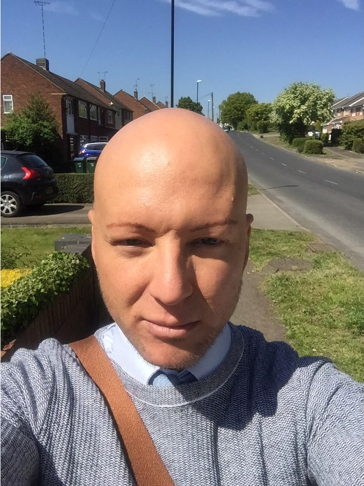

Daniele Fusari
Hello, I'm a trainee software developer from Coventry.
I'm looking for an junior PHP posistion to further my web Developing skills.
I've completed my Front End Web Development, Full Stack JavaScript PHP courses. See Achievements
Portfolio
About Me

From a very young age I was interested in computers,
but didn’t really understand the different aspects of the tech world.
I went to college and completed a two year Computer Technicians Award CACDP which included:
City & Guilds Computing, Electronic circuits & Components, Microprocessors
Microcomputer Systems Installation & maintenance, Data Communication & Networks,
Microcomputers, Electronic Circuits & Testing 2, Microprocessors 2,
Disk drive installation & Installation & maintenance 3, City & Guilds Word Processing.
While studying I took a part time job at a travel agents hoping to find work as a computer technician. However, having progressed as an overseas operation manager, I found myself still their 15 years later. Eventually, in the last few years at TUI, I was working very closely with a wiki database, and this renewed my interest. I decided to take a year out and independently study Front End Web Development. I am now ready to further my skills and begin my career as a Junior PHP developer.
Topics
Click on each icon to see more.
Contacts
SOCIAL PROFILES